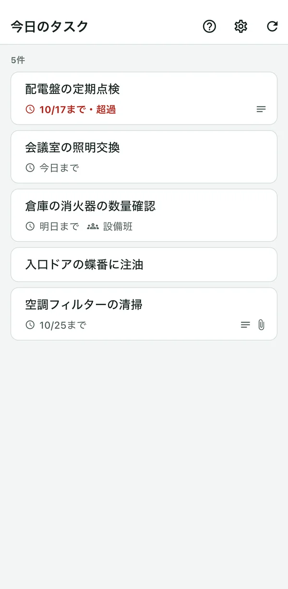
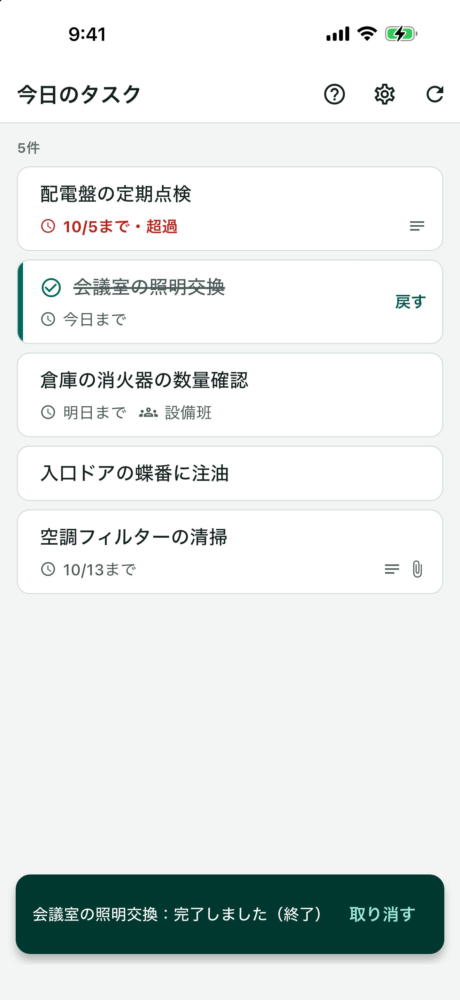
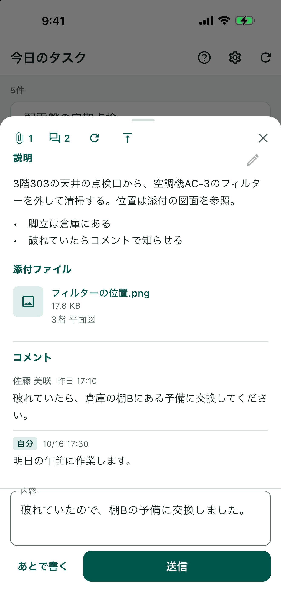

担当タスクを確認する。
自分や所属グループの未完了タスクを一覧で確認。タスクを開くと、説明や添付画像も読めます。

PCに戻ってから、作業を思い出して入力していませんか。BeatMineなら、手元のスマホからRedmineを更新。作業が終わったその場で状況を共有し、チームでプロジェクトを前へ。
無料で利用できます
iPhone向け · iOS 15以上

Redmine 6.0 / 6.1 / 7.0に対応 · 詳しい接続条件
作業は終わったのに、Redmineの更新はPCに戻ってから。そんなときに、BeatMineを。完了やコメントはいつものRedmineに残るので、チームはこれまでと同じ画面で確認できます。
作業内容を確かめて、
終わったらその場で更新。
自分や所属グループの未完了タスクを一覧で確認。タスクを開くと、説明や添付画像も読めます。

作業が終わったら、タスクの行を右へスワイプ。Redmineに反映できたか、画面で確認できます。
交換した部品や、次の人に伝えたいことも、その場で。コメントはRedmineの履歴に残ります。
「フィルターが破れていたので、予備に交換しました。」
タスクの情報は、iPhoneとお使いのRedmineの間で直接やり取りします。デベロッパはこのアプリからデータを収集しません。APIキーは端末の安全な保存領域に保存します。
プライバシーポリシー →お使いのRedmineに接続して使います。REST APIが有効か分からない場合は、Redmineの管理者に確認してください。
Redmineの設定によっては、接続や一部の操作ができない場合があります。
詳しい接続条件・制限事項 →無料で利用できます
iPhone向け · iOS 15以上
